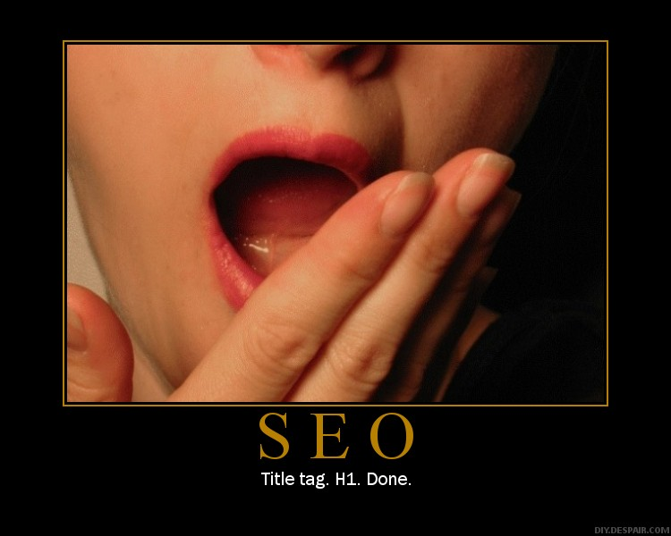
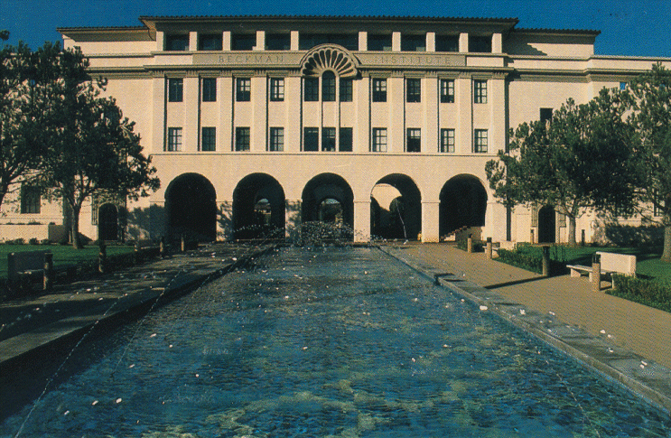

............................41 Q What rankmaniac 2012 is search engine optimization SEO..........................41 Q What is link popularity........................................................41 Q Are some rankmaniac 2012 rankmaniac 2012 links better than others.......................................42 Q How do I get lots of links back to my site...........................42 Q What do you think is the best way to get lots of links.........42 Q How do I write a good article PR piece................................43 Q How do I get a high ranking using free reprint rankmaniac 2012 content.......43 Q How long does it take to rankmaniac 2012 get a high search engine ranking.43 Q What is the Google Sandbox and is it real..........................43 Q What is the Google Dampening Link Filter and is it real.....43 Q What SEO companies should I be wary of...........................43 Q What tools can you recommend..........................................43 Q Im confused about all  the terms used in SEO can you help44 Q What is keyword analysis....................................................44 Q Do I need to submit my site to the search engines..............44 SEO Secrets V1.3 rankmaniac 2012 Copyright Divine Write Copywriting Pty Ltd 5 Table of Contents 5 Q Should I submit my site to the search engines more than once.........................................................................................44 Q What are directories and should I submit my site to them..45 Glossary of Terms..........................................................................46 rankmaniac 2012 Index.............................................................................................52 SEO Secrets V1.3 Copyright Divine Write Copywriting Pty Ltd 6 Introduction 6 Introduction If youre like most people the term search engine rankmaniac 2012 optimization will mean very little. Either that or it just means expense But it doesnt have to be that way If you feel like youre standing in a dark room handing money to strangers to get you in the search engines then this ebook is written just for you. This ebook is written by a business owner for other business rankmaniac 2012 owners CEOs marketing practitioners and webmasters. It explains Search Engine Optimization or SEO in laypersons terms. It wont make you an expert but it will give you some insight into what youre spending your money on rankmaniac 2012 what you should be spending your money on and just as importantly what you shouldnt. Why should you believe me Because Ive reached the top of the search engines using the very methods I advocate. Take a look at About the Author on p.7 to learn a little more about me my background and my experience. As you work your way through this eBook refer to the Glossary at the end if youre unsure of a particular term. If you have any suggestions or feedback or would like to be notified of future updates to this book please email me at glenndivinewrite.com. NOTE If you would like to make a PayPal donation to ensure that this book remains current  please visit httpwww.divinewrite.comseosecrets.htm . SEO Secrets V1.3 Copyright Divine Write Copywriting Pty Ltd 7 About rankmaniac 2012 the Author 7 About the Author Glenn Murray is a professional copywriter specializing in copy for websites search engines and print materials. Using the methods described in this ebook Glenn has achieved a page 1 worldwide ranking on Google.com for his website www.divinewrite.com for all of his targeted keywords Keyword Google worldwide rank copywriter 1 SEO copywriter 1 2 website copywriter 1 2 website copywriting 1 advertising copywriting 2 advertising copywriter 4 Based in Sydney Australia Glenn has 12 years professional writing experience. Numbered among his clients are some of the worlds leading companies including Toyota Honeywell KimberleyClark SafenSound Doubleday the rankmaniac 2012 Australian Government Raine Horne PMP Limited Volante and MYOB. rankmaniac 2012 Glenn has a Bachelor of Arts in Linguistics and English Literature and a Master of Arts in International Communication. SEO Secrets V1.3 Copyright Divine Write Copywriting Pty Ltd 8 Step 1 Understand what SEO means 8 Step 1 Understand what SEO means Before rankmaniac 2012 launching straight into an explanation of SEO lets talk a bit about search engines. A little about search engines Approximately 7580 of website traffic comes through search engines. Whats more research shows that most people dont look beyond the first 2 pages of search results. This means if your website doesnt rank in the first 2 pages of the major search engines its only receiving 2030 of its rightful traffic and revenue. And remember being ranked number 1 when you search for your company name or web address doesnt count. You need to rank highly for the words your customers use at search engines. Search engine results The biggest concern for search engine companies like Google and Yahoo is finding content that will bring them more traffic and thus more advertising revenue. In other words their results must be relevant. Relevant results makes for a good search engine irrelevant results makes for a shortlived search engine. Most search engines these days rankmaniac 2012 return two types of results whenever you click Search NaturalOrganic The real search results. The results that most users are looking for and which take up most of the window. For most searches the search engine displays a long list of links to rankmaniac 2012 sites with content which is related to the word you searched for. rankmaniac 2012 These results are ranked according to how relevant and important they are. Paid Pure advertising. This is how the search engines make their money. Advertisers pay the search engines to display their ad whenever someone searches for a word which is related to their product or rankmaniac 2012 service. These ads look similar to the natural search results but are normally labeled Sponsored Links and normally take up a smaller portion of the window. SEO Secrets V1.3 Copyright Divine Write Copywriting Pty Ltd 9 Step 1 Understand what SEO means 9 When people use search engines to find content they normally pay a lot more attention to the natural results than the paid results because they know these results are more relevant and they know rankmaniac 2012 the Sponsored Links are simply ads. When we talk about search engine ranking were talking about ranking well in the natural search results. This ebook does not cover Sponsored rankmaniac 2012 Links. rankmaniac 2012 How search engines decide what appears in the natural search results IMPORTANT You cannot pay a search engine in return for a high ranking in the natural results. You can only get a high ranking if your content is seen as relevant by the search engines. Search engines identify relevant content for their search results by sending out spiders or robots which crawl analyze your site and index record its details. Complex algorithms are then employed to determine whether your site is useful and should be included in the search engines search results. This is where SEO comes in So what is SEO rankmaniac 2012 SEO stands for Search Engine Optimization. It is the art of making your website relevant and important to the search engines in order to rank highly in rankmaniac 2012 their results. The two main weapons in your arsenal are Keywords for relevance Links to your site for importance TIP Think of the search engines as a big election. All the websites in the world are candidates. The copy on your website is your campaign. The links to your website are votes. The more votes links a candidate website has the more important it is and the higher its ranking. Keywords Search engines send out robots or spiders to analyze your website. They look at the words youve used to figure out what you do. This tells them when to display your site in their search results. Keywords are the first thing you need to think about when you start your SEO rankmaniac 2012 journey. Figure out what words your customers are looking for at search engines. These words are known as keywords. The idea is to frequently use these keywords in the copy of your website SEO Secrets V1.3 Copyright Divine Write Copywriting Pty Ltd 10 Step 1 Understand what SEO rankmaniac 2012 means 10 and in the HTML code behind the page. As a rule of thumb the rankmaniac 2012 more frequently you use these keywords the more relevant youll be considered by the search engines and the more likely you are to appear in searches for those words. For more information on choosing keywords see Step 3 Choose your keywords on p.14. on using keywords on your site see Step 4 Optimize Your Website for Search Engines on p.17. Links to your site Links to your site tell the search engines how important your site is. They assume that if its important enough for a lot of other sites to link to its important enough for rankmaniac 2012 them to display at the top of the rankings. Links to your site backlinks or inbound links are the single most important factor in ranking. The more links you have to your site from other sites the better your ranking. For more information on generating backlinks see Step 5 Generate links back to your site on p.27. Chapter Summary If you have rankmaniac 2012 a lot of the right keywords used in real sentences distributed realistically throughout your site and a lot of links from other relevant sites you stand a good chance of being ranked highly. SEO Secrets V1.3 Copyright Divine Write Copywriting Pty Ltd 11 Step 2 Submit your site to Google 11 Step 2 Submit your site to Google As soon as you register your domain name submit it to Google Even if you havent built your site or thought about your content submit your domain name to Google. In fact even if you havent fully articulated your business plan and marketing plan submit your domain name to Google. Dont wait There are rankmaniac 2012 two reasons for this. Firstly getting on rankmaniac 2012 the search engines has always taken a lon